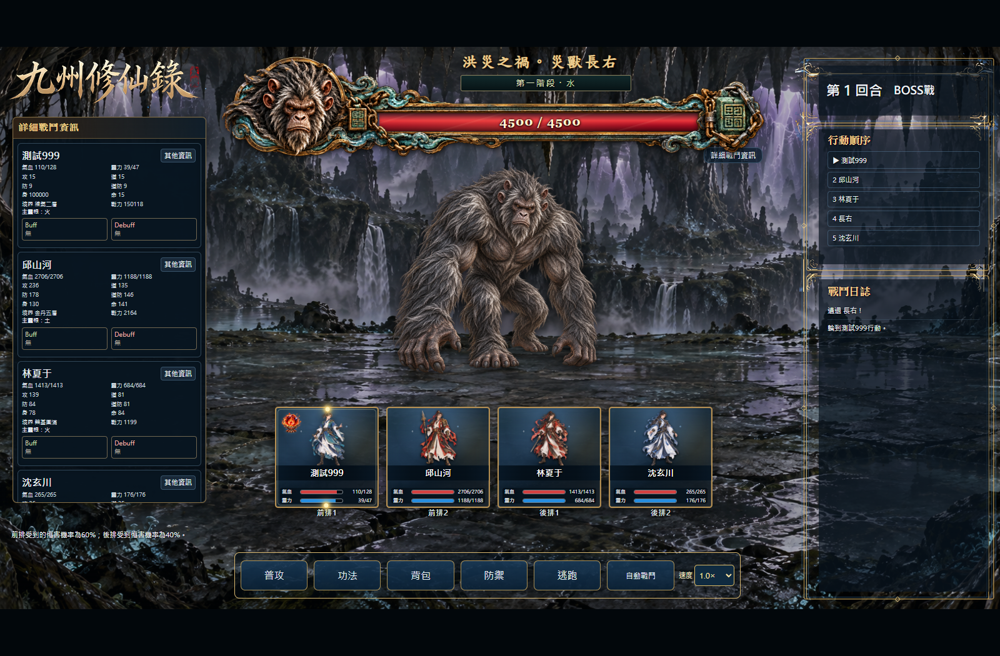
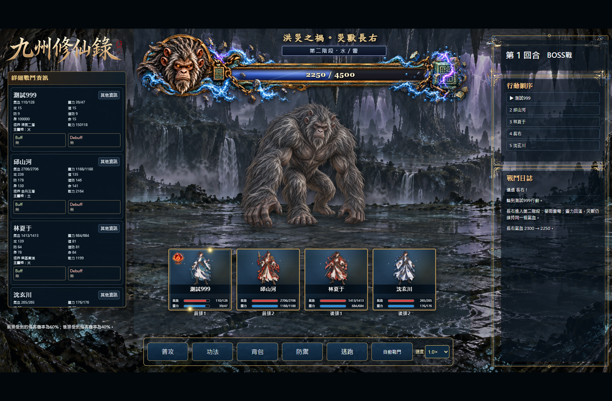
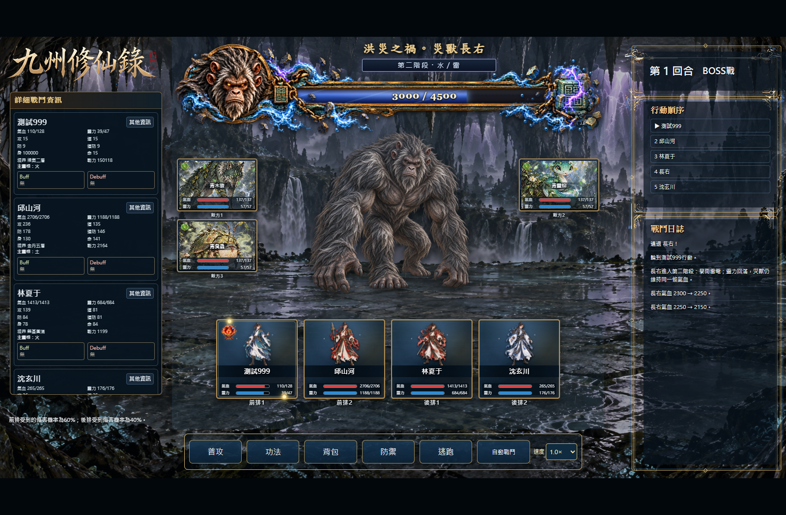

開啟測試遊戲 · 20261019-bossbar-1
依玩家確認的設計實裝四耳猿首、古銅封印與鎖鏈。氣血到達既有第二階段門檻時，整套切換為破碎封印、水流與雷光圖片，血條由紅轉為水雷藍紫。名稱、階段、血量數字與填滿比例均由戰鬥資料即時產生。
沿用原本階段與傷害規則；保留禁止自動、小型全身我方戰位、隨從預留區、全畫面第二階段提示及勝敗退出修正。正式母檔與正式發布內容未修改。
九項均通過，無瀏覽器程式錯誤。三隻隨從僅作排版測試，沒有新增正式長右小怪或掉落。
完成長右血條美術與第二階段實際換圖。本項無待補。既有主線勝利關閉戰鬥畫面的修正保留。
血條驗收資料 · 實際戰鬥驗收 · 程式位置 · 內建生圖工具提示詞與來源 · 透明度與無損編碼驗證


